Hey there, chefs— welcome to Co-op Kitchen’s development log! Why are we starting one? Well, Family Style started as a meager college project, and while our original team dreamed that it would explode in popularity, we were stunned when it actually did. We loved building up a player base, and this dev log is just one tool we want to use to communicate with all of you.
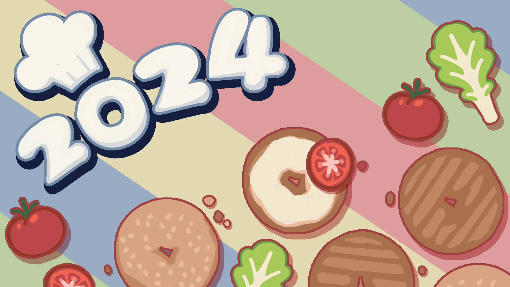
We also just announced Family Style 2, and that’s no coincidence with us starting a dev log. You can expect teasers of things to come, struggles we’re (hopefully) overcoming, and a general behind-the-scenes look at our small team as we develop Family Style 2.
Last week, we asked chefs across all our socials for questions they want us to answer in our inaugural issue. We got some really awesome questions, so thank you to everyone who threw their curiosity our way! Check out some of our answers below:
Q: Is Family Style 2 an update/revamp to Family Style or is it a new/different game?Family Style 2 will be a completely new game and separate app from the Family Style you know and love. While the sequel will maintain much of the core gameplay that gives this hectic cooking game its identity, there will also be a myriad of new features, visuals, and gameplay elements that will freshen up the experience.
Q: When is it releasing?Sometime near the end of 2024. We don’t have an exact release date… yet. Please follow us on any of our social platforms to stay up to date! Discord | Twitter | Instagram | Facebook (shameless plug)
Q: Will Family Style 2 have better support?Absolutely yes. Family Style was built with software that simply could not scale the way we wanted. It has dependencies that have become obsolete and near impossible to manage. Due to additional external factors outside of our control, our ability to maintain and upkeep Family Style dwindled despite our desire to fix its issues. However, we’re rebuilding everything from the ground up this time around! Art, codebase, device support, everything. Family Style 2 will have dedicated eyes on it to ensure all of its bugs get squashed as well. Maybe even additional features or modes post-launch. Wait what— who said that?
Q: What are the new ingredients/recipes/cookwares?We’re going to keep our lips pretty sealed on this for now… but we are going to be including bagels. Perhaps you noticed this delicious breakfast goodie in our teaser image!
Q: Can we submit puns for the loading screens between rounds?This is a fantastic idea! Join our Discord if you haven’t already, and we’ll probably host a little contest there in the future.
Q: The art looks new, what inspired the new look?We’ll be deep diving into this in future dev logs. It really merits a whole issue, and our new artist would love to talk about this. Stay tuned!
February 16, 2024
A big goal of Family Style 2 is to make cooking more meaningful. During the development of the original game, we had a similar lofty goal, but due to time constraints we ended up shipping with what you can experience today: a simple 6-tap interaction.
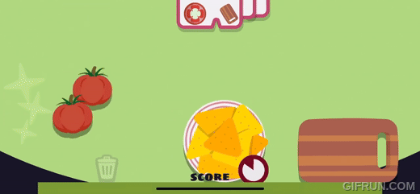
Gameplay footage from Smiley_Builder on Youtube! Check them out :)
What do we mean by meaningful though? Do we mean more fun? More interactive? Well, one of our design pillars is geared toward wringing out as much functionality and affordance as we can from the mobile platform. Having cooking equate to quick, subsequent taps just doesn’t… cut it for the sequel. We want to leverage mobile controls so that cooking feels more substantive and better matches the real-world action. This sounds more meaningful, right?
We’ve been experimenting with a myriad of different ways to achieve this! Some minigames involve a little bit of patience as things cook, forcing you to interact when the moment is just right. Other minigames are more active and require more of your attention and focus. Some are a combination of both patience and action. Below are some mockups of the skillet and fryer minigames with which we’ve been toying. Expect more details about these in the future.
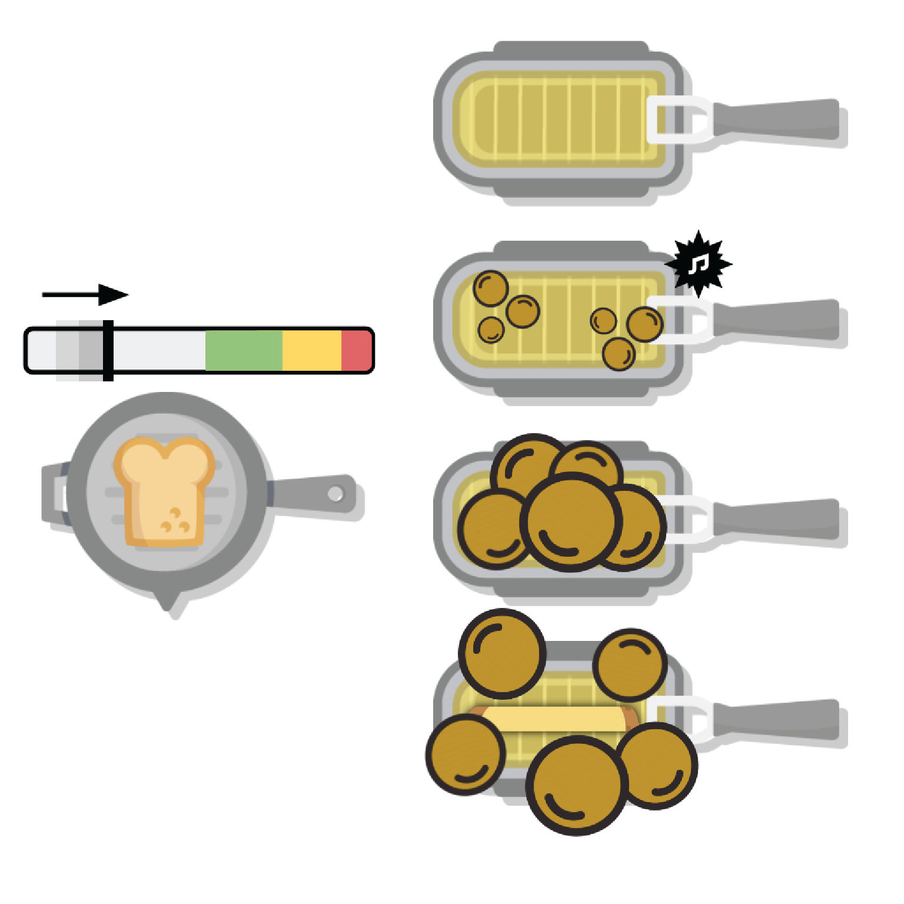
The idea is to play on the tension that cooperative cooking can create, forcing the player to decide to split their focus between cooking, listening to teammates, and finishing their recipe. In the original game, this split focus worked wonders for creating chaos- and we want to lean more into that direction! By adding more engagement to cooking instead of just mindless tapping, we’re effectively adding another factor to split focus between. More chaos? You asked for it!
This does beg the question though: what happens if you don’t cook “correctly”? If cooking is now more of a minigame than before, what happens if you “lose” and don’t properly cook the ingredient? Hm. Good question. Stay tuned :)
March 21, 2024
Family Style was an ideal student project in a lot of ways and a really challenging one in others. One gameplay element that falls into the “oh this isn’t so bad” category, is the fact that ingredients, once added to a valid plate, just have their visuals… stack on top of one another. Easy. We didn’t need to do any additional logic checks. This initially simplified a lot from a development standpoint— especially for a bunch of students. It even visually worked well for certain recipe families like nachos and pizzas! In the long run though, this implementation direction turned out to be more of a hindrance.
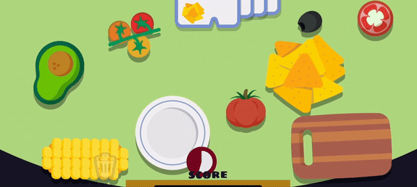
Since you stack everything on top of nachos, it’s the perfect recipe family for Family Style’s plating system.
There are actually a couple hindrances. Visually, some recipes do not have nearly as good of a show as nachos or pizzas; I’m looking at you, protein-plus-sides recipes. Furthermore, stacking ingredients fails to capture all the different types of real-world plating. This system additionally restricted the creativity of our recipe design since we had to deal with constraints around ingredient order (to ensure stacked ingredients show well) and recipe types (some just don’t work with this plating system). But that’s all in the past. We’re in the future now with Family Style 2. Let’s talk about what we’re doing differently.
So we knew that we wanted to change this system. Going through a handful of different, scalable plating layouts, we landed on the following set of four:
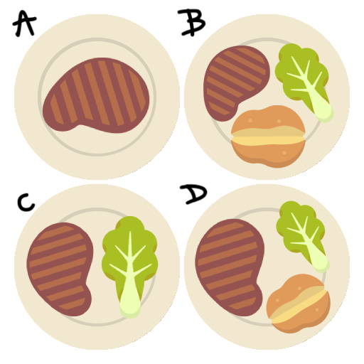
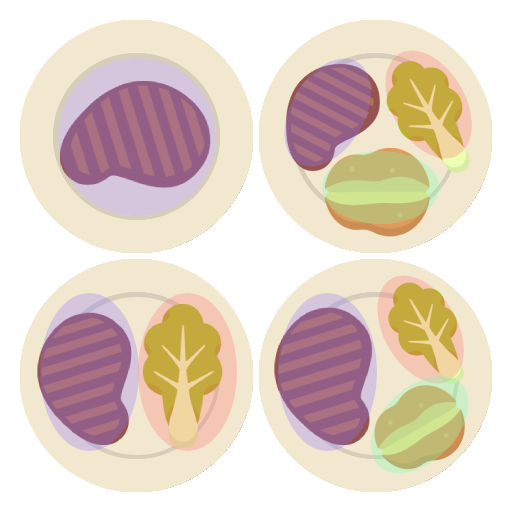
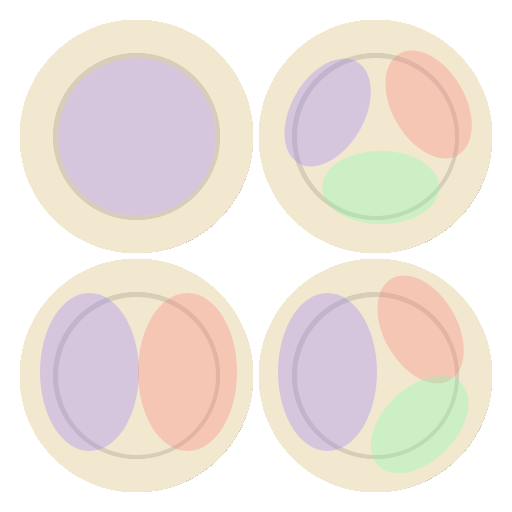
Since you stack everything on top of nachos, it’s a great recipe for Family Style’s plating system.
These new layouts provide much needed visual flexibility. Each colored circle here represents a rough location, rotation, and size of a recipe’s ingredients relative to one another. With (A), we preserve the stackable essence of the original plating system, while in (C) we can also display two main ingredients side-by-side. (B) and (D) are similar in that they both allow for plating recipes like protein-plus-sides in a more aesthetic way, but in (D) we can spotlight the “star” ingredient of a recipe by giving it more real estate on the plate. We can now show not one, not two, but three different ingredients on a plate! We could even stack additional ingredients upon each of the individual ingredients in (B), (C), and (D) layouts if we’re feeling fun and flirty with some designs. These are really starting to feel more like recipes!
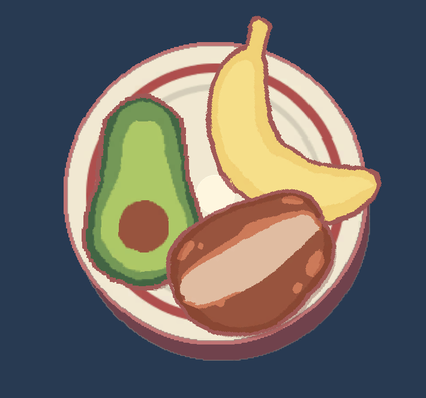
With our lovely first pass art, we're already ballin' hard.
With this nice visual framework, we also gain much needed flexibility in the design department. We can now actually curate recipes with the same level of precision as Michelin star chefs so that their final visual state feels like the real-world recipe they’re meant to simulate. It’s a powerful perspective shift, because we’re no longer plagued by readability problems or design constraints like ingredient order. While we won’t divulge into the depths of our recipe design philosophies in this post, this visual framework really helps break down recipes into modular bits of thinking which really expedites the design process.
To top this dev log off, we’ll talk a little bit about our custom tool we wrote to put all this fun design thinking into practice. Essentially we built an inspector tool that allows us to add ingredients to any size recipe we want and modify its transform any way we want. Once we’re happy with its plating, we just click a big button to export its contents into a JSON format. Our other gameplay systems can then easily read the recipe JSON’s information and place the ingredients properly when they’re added to the plate.
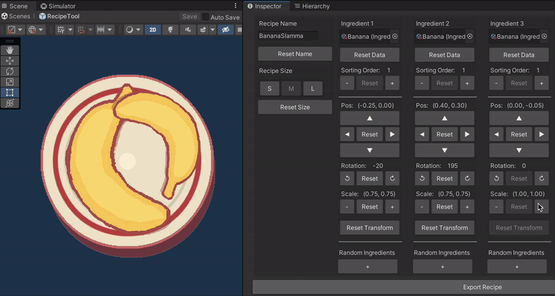
This is not a real recipe. Or is it? If you read this, let us know in the Discord and maybe we'll make it real.
This tool gives us precise control over each ingredient and provides a very clear visual of what exactly the recipe will look like when it’s complete— mostly independent of ingredient art statuses. It will undoubtedly save us a lot of effort for future recipe designs, and it’s also great for collaborating within the team, as we can send screenshots to one another about recipes we’re in the middle of developing. Our engine switch to Unity was already paying dividends, and this is a really great bonus. Not only are we more experienced developers this time around, but we’re also working with a powerful engine, so we might as well squeeze every last drop of utility out of it!
July 2, 2024
We’re finally back with some dev log action! Big life changes on a small dev team really affect workflow- who knew? Anyway, let’s talk about how Family Style 2 is making cooking more meaningful… again. Our 2nd dev log, MAKING COOKING FUN, talked a little bit about how we’re converting the act of cooking into a more engaging activity by forcing more tension on player decisions: should I finish cooking this ingredient? Or pass these other ingredients to my teammate? Can I afford to do both simultaneously?
However, we’re not here to rehash what we’ve already talked about. Instead, let’s unveil what happens if players don’t cook “correctly” (as was teased previously). Since cooking is now its own encapsulated mini-game, there’s necessarily a “success” and “failure” state when engaging with cookware now. Success looks like the OG Family Style: the cooked ingredient pops off the cookware - hooray! Failure looks a little different depending on the cookware. Let’s talk about one: the skillet.
Here's a little sneak peek at our current skillet minigame implementation!
The skillet cooking mini-game is fairly simple as it is implemented on our end. Once an ingredient is added to the cookware, the player must tap the cookware when its “cook line” has crossed an appropriate threshold. Doing so incorrectly does what you might expect a real skillet to do if you overcook an ingredient… it starts to smoke! In this instance of what we’re calling a mini-hazard, players can tap the puffs of smoke to dispel them into tinier and tinier puffs until they’re fully dissipated; however, as the smoke puffs bounce around the bounds of the screen, if they cross the left/right sides of the screen, they pass over to adjacent players just like ingredients! Those players then subsequently must dispel the puffs… but they definitely know who to blame for the disruption.
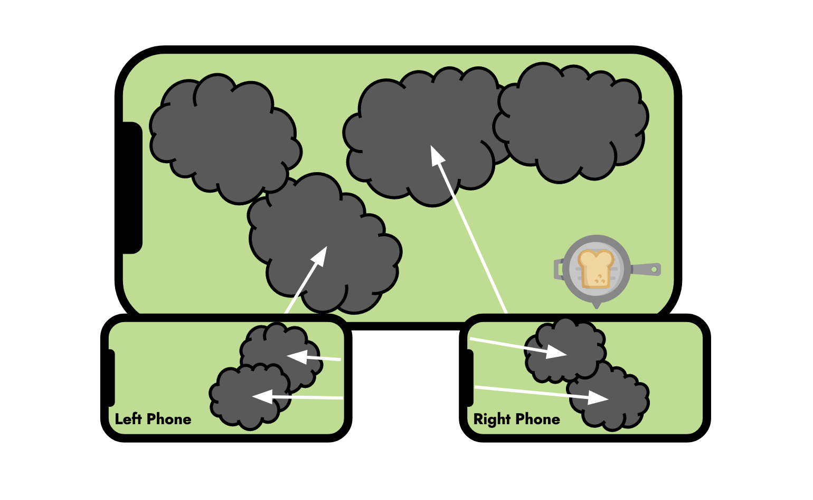
A mockup visualizing the skillet's smoky mini-hazard.
There are a couple important design decisions embedded in this interaction that we want to highlight. We want “failing” a cookware interaction to not feel like a slap in the face. Notice how there is no impact on team score or ingredient drop frequency or anything directly related to players succeeding the level. The smoke mini-hazard is just an additional layer of stress thrown in. It’s disruptive- which is fun in a hectic party game- but not destructive- which is not fun when all your teammates are trying to win the round. The mini-hazards are meant to induce chaos into the kitchen, which leans into our core pillars.
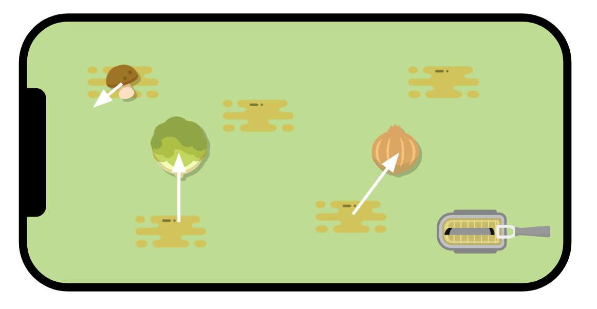
The fryer's minihazard! Can you guess the interaction here?
Second, all mini-hazards are meant to allow the player to continue mostly playing the game while active, meaning no mini-hazards should dramatically impede players from passing ingredients or assembling dishes. Some of our inspiration games, like Spaceteam, have hazards, like the classic wormhole, that completely derail players from what they were doing and force players to deal with it. While we have hazards like this in the works (👀), we want cookware mini-hazards to be demanding. They should be impactful enough that players feel the pressure to address them, but still allow leeway for players to continue their previous train of thought.
We’re currently finding the exact boundaries of this design philosophy, as our cutting board currently has a pretty disruptive mini-hazard- but hey, we’re playtesting it!